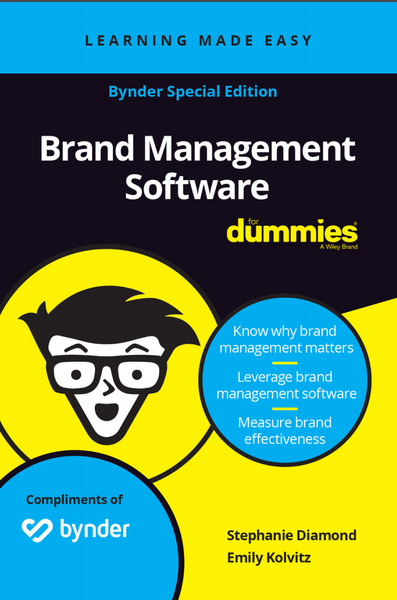

Brand Management Software for Dummies Chapter Excerpt
View live original ↗ · Portfolio PDF

Limited resources make it impractical to manually produce content quickly to reach a growing number of consumers on a diverse range of channels. This way of working no longer can scale in today’s omni-channel, always-on environment. That’s why many marketers are turning to templates in order to scale content creation.
Portfolio PDF, listed December 18, 2020, on Journoportfolio.